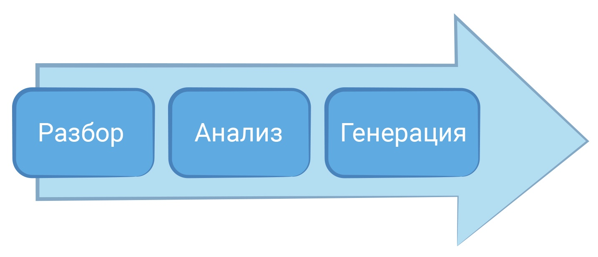
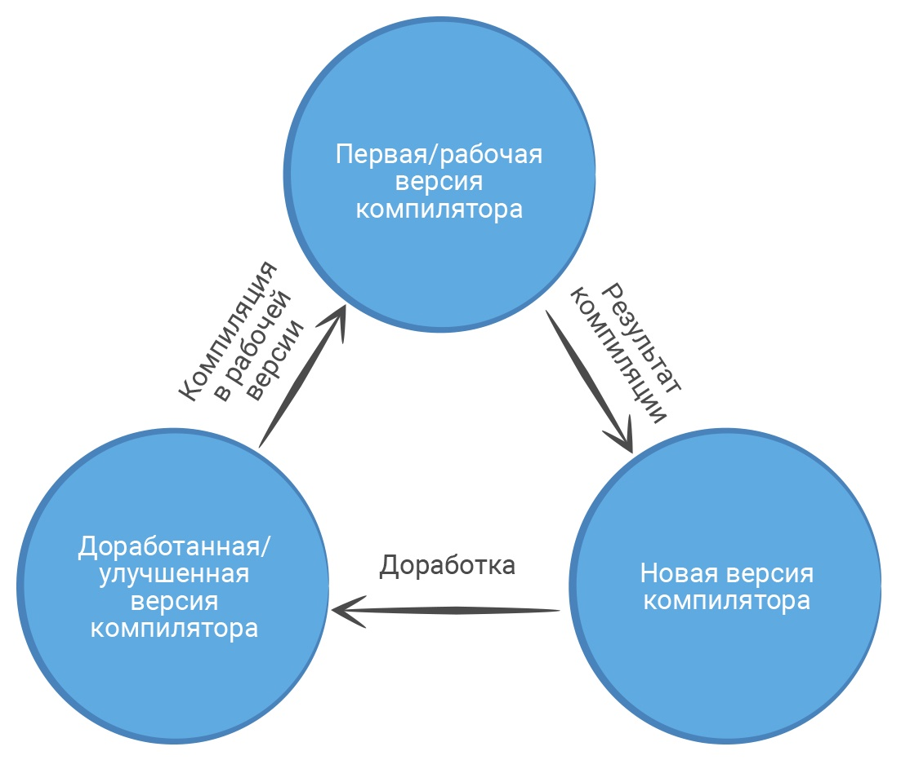

Что такое компилятор?
Компилятор — это программа, преобразующая исходный код программы на языке высокого уровня в машинный код, который сможет выполнить центральный процессор компьютера. А сам процессор обрабатывает информацию, выполняет команды пользователя и следит за работой всех подключенных устройств. Но процессор может разобрать только машинный код — набор 0 и 1, которые записаны в определённом порядке. Почему именно 0 и 1? В процессор поступают электрические сигналы. Сильный сигнал обозначается цифрой 1, а слабый — 0. Набор таких цифр обозначает какую-то команду. Процессор ее распознает и выполняет.
Как работает компилятор?
Преобразование программного кода в машинный называется компиляцией. Компиляция только преобразует код. Она не запускает его на исполнение. В этот момент он "статически" (то есть без запуска) транслируется в машинный код. Это сложный процесс, в котором сначала текст программы разбирается на части и анализируется, а затем генерируется код, понятный процессору.
рис. 1. Этапы компиляции
На чем написан компилятор?
В 1950-е годы группа разработчиков IBM под руководством Джона Бэкуса разработала первый высокоуровневый язык программирования Fortran, который позволил писать программы на понятном человеку языке. Помимо языка, инженеры работали и над компилятором. Он представлял собой программу с набором исполняемых команд, которая могла компилировать другие программы на Fortran, в том числе и улучшенную версию себя. В дальнейшем язык Fortran и его компилятор использовали, чтобы написать компиляторы для новых языков программирования.
рис. 2. Создание компилятора и его доработка
Какие ошибки может определить компилятор?
Когда компилятор анализирует текст программы, он проверяет, соответствует ли запись оператора стандартам языка. Если найдено несоответствие, то компилятор выводит об этом информацию пользователю в виде ошибки. Когда вся программа разобрана, пользователь видит список ошибок, которые есть в коде, и может их исправить. Пока программист не исправит ошибки, компилятор не перейдет к следующему этапу — генерации машинного кода для процессора. Чаще всего компилятор показывает пользователю:
1. Ошибки объявления переменных или отсутствие их начальных значений.
2. Ошибки несоответствия типов.
3. Ошибки неправильной записи операторов и функций.
Иногда компилятор определяет код, который при выполнении дает неправильный результат. Но преобразовать такую программу в машинный код все-таки можно. В этом случае компилятор показывает пользователю предупреждение. Такая реакция компилятора больше похожа на рекомендации, но на них стоит обратить внимание. Программист сам решает оставить код с предупреждением или изменить программу. Анализируя текст программы, компилятор не только ищет ошибки, но еще и упрощает ее код. Такой процесс называется оптимизацией. Во время оптимизации компилятор изменяет программный код, но функции, которые выполняла программа, остаются прежними.